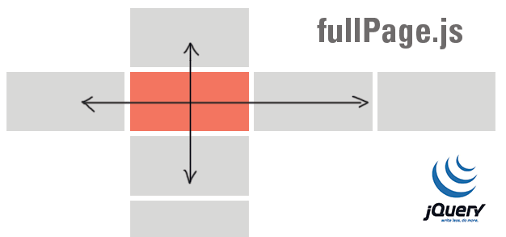

jQuery全屏滚动插件fullPage.js

简介
如今我们经常能见到全屏网站，尤其是国外网站。这些网站用几幅很大的图片或色块做背景，再添加一些简单的内容，显得格外的高端大气上档次。比如 iPhone 5C 的介绍页面（查看），QQ浏览器的官网站。如果你也希望你的网站能设计成全屏的，显得更上档次，你可以试试 fullPage.js。
fullPage.js 是一个基于 jQuery 的插件，它能够很方便、很轻松的制作出全屏网站，主要功能有：
- 支持鼠标滚动
- 支持前进后退和键盘控制
- 多个回调函数
- 支持手机、平板触摸事件
- 支持 CSS3 动画
- 支持窗口缩放
- 窗口缩放时自动调整
- 可设置滚动宽度、背景颜色、滚动速度、循环选项、回调、文本对齐方式等等
兼容性
jQuery 兼容
兼容 jQuery 1.7+。
浏览器兼容
 |
 |
 |
 |
|
|---|---|---|---|---|
| IE8+ ✔ | Chrome ✔ | Firefox ✔ | Opera ✔ | Safari ✔ |
使用方法
1、引入文件
<link rel="stylesheet" href="css/jquery.fullPage.css"> <script src="js/jquery.min.js"></script> <!-- jquery.easings.min.js 用于 easing 参数，也可以使用完整的 jQuery UI 代替，如果不需要设置 easing 参数，可去掉改文件 --> <script src="js/jquery.easings.min.js"></script> <!-- 如果 scrollOverflow 设置为 true，则需要引入 jquery.slimscroll.min.js，一般情况下不需要 --> <script src="js/jquery.slimscroll.min.js"></script> <script src="js/jquery.fullPage.js"></script>
2、HTML
<div id="dowebok"> <div class="section"> <h3>第一屏</h3> </div> <div class="section"> <h3>第二屏</h3> </div> <div class="section"> <h3>第三屏</h3> </div> <div class="section"> <h3>第四屏</h3> </div> </div>
每个 section 代表一屏，默认显示“第一屏”，如果要指定加载页面时显示的“屏幕”，可以在对应的 section 加上 class=”active”，如：
<div class="section active">第三屏</div>
同时，可以在 section 内加入 slide，如：
<div id="dowebok"> <div class="section">第一屏</div> <div class="section">第二屏</div> <div class="section"> <div class="slide">第三屏的第一屏</div> <div class="slide">第三屏的第二屏</div> <div class="slide">第三屏的第三屏</div> <div class="slide">第三屏的第四屏</div> </div> <div class="section">第四屏</div> </div>
3、JavaScript
$(function(){
$('#dowebok').fullpage();
});
配置
1、选项
| 选项 | 类型 | 默认值 | 说明 |
|---|---|---|---|
| verticalCentered | 字符串 | true | 内容是否垂直居中 |
| resize | 布尔值 | false | 字体是否随着窗口缩放而缩放 |
| slidesColor | 函数 | 无 | 设置背景颜色 |
| anchors | 数组 | 无 | 定义锚链接 |
| scrollingSpeed | 整数 | 700 | 滚动速度，单位为毫秒 |
| easing | 字符串 | easeInQuart | 滚动动画方式 |
| menu | 布尔值 | false | 绑定菜单，设定的相关属性与 anchors 的值对应后，菜单可以控制滚动 |
| navigation | 布尔值 | false | 是否显示项目导航 |
| navigationPosition | 字符串 | right | 项目导航的位置，可选 left 或 right |
| navigationColor | 字符串 | #000 | 项目导航的颜色 |
| navigationTooltips | 数组 | 空 | 项目导航的 tip |
| slidesNavigation | 布尔值 | false | 是否显示左右滑块的项目导航 |
| slidesNavPosition | 字符串 | bottom | 左右滑块的项目导航的位置，可选 top 或 bottom |
| controlArrowColor | 字符串 | #fff | 左右滑块的箭头的背景颜色 |
| loopBottom | 布尔值 | false | 滚动到最底部后是否滚回顶部 |
| loopTop | 布尔值 | false | 滚动到最顶部后是否滚底部 |
| loopHorizontal | 布尔值 | true | 左右滑块是否循环滑动 |
| autoScrolling | 布尔值 | true | 是否使用插件的滚动方式，如果选择 false，则会出现浏览器自带的滚动条 |
| scrollOverflow | 布尔值 | false | 内容超过满屏后是否显示滚动条 |
| css3 | 布尔值 | false | 是否使用 CSS3 transforms 滚动 |
| paddingTop | 字符串 | 0 | 与顶部的距离 |
| paddingBottom | 字符串 | 0 | 与底部距离 |
| fixedElements | 字符串 | 无 | |
| normalScrollElements | 无 | ||
| keyboardScrolling | 布尔值 | true | 是否使用键盘方向键导航 |
| touchSensitivity | 整数 | 5 | |
| continuousVertical | 布尔值 | false | 是否循环滚动，与 loopTop 及 loopBottom 不兼容 |
| animateAnchor | 布尔值 | true | |
| normalScrollElementTouchThreshold | 整数 | 5 |
2、方法
| 名称 | 说明 |
|---|---|
| moveSectionUp() | 向上滚动 |
| moveSectionDown() | 向下滚动 |
| moveTo(section, slide) | 滚动到 |
| moveSlideRight() | slide 向右滚动 |
| moveSlideLeft() | slide 向左滚动 |
| setAutoScrolling() | 设置页面滚动方式，设置为 true 时自动滚动 |
| setAllowScrolling() | 添加或删除鼠标滚轮/触控板控制 |
| setKeyboardScrolling() | 添加或删除键盘方向键控制 |
| setScrollingSpeed() | 定义以毫秒为单位的滚动速度 |
3、回调函数
| 名称 | 说明 |
|---|---|
| afterLoad | 滚动到某一屏后的回调函数，接收 anchorLink 和 index 两个参数，anchorLink 是锚链接的名称，index 是序号，从1开始计算 |
| onLeave | 滚动前的回调函数，接收 index、nextIndex 和 direction 3个参数：index 是离开的“页面”的序号，从1开始计算；
nextIndex 是滚动到的“页面”的序号，从1开始计算； direction 判断往上滚动还是往下滚动，值是 up 或 down。 |
| afterRender | 页面结构生成后的回调函数，或者说页面初始化完成后的回调函数 |
| afterSlideLoad | 滚动到某一水平滑块后的回调函数，与 afterLoad 类似，接收 anchorLink、index、slideIndex、direction 4个参数 |
| onSlideLeave | 某一水平滑块滚动前的回调函数，与 onLeave 类似，接收 anchorLink、index、slideIndex、direction 4个参数 |
相关阅读
fullPage.js GitHub 地址：https://github.com/alvarotrigo/fullPage.js
发表评论
最好可以让主屏滑动横竖可选，从屏相应变竖横，滚动可以加在主屏，也可以加在横屏...现在也可以做到，不过略微麻烦了些。。还是要感谢作者的无私奉献，赞。
能做个小米4那种滚动效果么？fullpage滚动不到class以外的地方。

请问怎么感觉这个插件很迟钝，有时鼠标滚动两下才动，手机上滑动也迟钝
回复 穿匡威的兔子: 我也是遇到这个问题
回复 属于我们的回忆: 'navigation': true,我设置这个不管用呢
回复 属于我们的回忆: 'navigation': true,这个设置不管用啊
- 网页设计-张影
请问此插件能禁止向上滑动吗？？
在第一屏设置 内容时，怎么全是从居中位置开始的？ 如果使用 margin-top:-200px;效果能达到，但是不是百分比，而且缩放也不能实现的吧。
mode: 参数做什么的？
请问为什么添加了scrollOverflow:true无效？
如何在第一级页面跳转到第二级页面的第三屏的时候无滚动效果而直接跳转到那里，但在第二级页面内正常浏览时还保持滚动效果？
能把第一屏的高度变小吗 像http://www.meizu.com/products/meilannote2/feature.html 我想把头部单独做一屏 如果写到这个CSS外 下面每一屏就有多出来的了
回复 DeAnWen: 我也碰到这个问题了，你怎么解决的呀
请问怎么把后面连接后面的page字样去掉 （http://www.dowebok.com/demo/2014/97/#page2的#page2）？
回复 肖佰萍: 没有，在footer前面加了一张图片硬是把footer弄成了全屏。。。不甘心啊
可以让他最后一屏滚动个设置的值么，我就想加个footer，但是不需要一整屏！
回复 Fighter-Kee: 我也是同样的问题，不知道怎么实现
第一屏的afterLoad后面的动画在第一次载入时是不是不会出现的？（但是滑动到第二屏再返回第一屏的时候会出现？）如果可以改变这种情况，如何实现？
回复 Fighter-Kee: 同问，你解决了吗
弄了一个footer 不想用全屏 怎么实现？
jquery.easings.min.js怎么在案例没有出现呢？
大神，为什么我下载下来没有“正常滚动的元素”那个例子啊，，求帮助

设置continuousVertical: true为什么从最底部滚动到顶部时会显示滚动2次
为什么我的效果是鼠标滚轮滑动一次有时候就滚动两屏有时候滚动好几屏？？？
我有个项目只是全屏左右滚动该如何写呢?
很不错，感谢分享
为啥我下载下来放在项目里，没有右面那几个点了。我都看2天了。也没解决
怎么设置手机、平板的触控事件呢？？急求啊
这个有点bug吧
？我这没发截图。我现在的那个苹果演示，如果点击右边的按钮切换第三屏的那个会滑向第四屏的手机就会在第三屏错位，我用的火狐和谷歌都测了 都有点错位我想问一下。在手机浏览器里你是怎么做到地址栏一直存在的。因为在PC 浏览器里的模拟器比如获取高度是480，到手机就变成了460了。求解
回复 isqiang: 因为滚太快了，
动画停止才可以接着滚回复 isqiang: 因为滚太快了，
动画停止才可以接着滚回复 dowebok: 谢谢耐心回答，那请问如果只用html5普通的video标签在分屏中插入视频，用fullpage的回调函数该怎么写让网页在滚动到其它分屏时视频暂停播放
回复 dowebok: 初学不好意思,只是想做个简单的个人网页,请问回调函数用onSlideLeave怎么编写让videojs插入的视频暂停,videojs里是var myPlayer = _V_(“my_video_1″);然后myPlayer.pause();怎么编写进onSlideLeave里,能给个示例代码或者网页么,谢谢了
你好，用这个做了网页，竖着分了四屏，第二屏再横向分了三屏，三横屏里都调用videojs加了视频放入div中，请问怎么才能让当前正在播放的视频滚动到其它屏时暂停播放，有自动播放属性的视频怎么才能让滚动到所在屏时再自动加载播放，谢谢
可以阻止滚动？怎么做？
怎么设置平板触控呢？？
怎么去掉左右箭头呢？？？？
回复 dowebok: 好吧 - -我解决了 ，第一次做网站 = =然而！！！！！
www.gosunos.com 大神你帮我看看吧 放在笔记本小屏幕上就里面的快直接变形了 图片不会随窗口变小而变小 = =
我还想问一下，为什么我用鼠标滚轮需要滚两下才会上下移动？例子也是有些是滚两下 有些是滚一下？